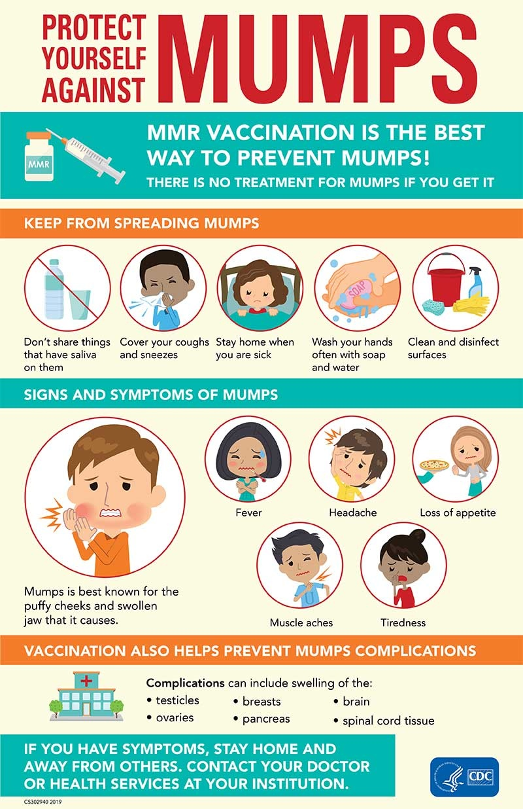

Viruses(mumps)

SYMPTOMS:
Some people infected with the mumps virus have either no signs or symptoms or very mild ones. When signs and symptoms do develop, they usually appear about two to three weeks after exposure to the virus.
The primary sign of mumps is swollen salivary glands that cause the cheeks to puff out. Other signs and symptoms may include:
- Pain in the swollen salivary glands on one or both sides of your face
-
Pain while chewing or swallowing
-
Fever
-
Headache
-
Muscle aches
-
Weakness and fatigue
-
Loss of appetite
CAUSES:
- Mumps is caused by a virus that spreads easily from person to person through infected saliva. If you're not immune, you can contract mumps by breathing in saliva droplets from an infected person who has just sneezed or coughed. You can also contract mumps from sharing utensils or cups with someone who has mumps.
DIAGNOSIS:
See your doctor if you or your child has signs and symptoms of mumps. Mumps is highly contagious for about nine days after symptoms appear. Tell your doctor's office before you go in that you suspect mumps so arrangements can be made to avoid spreading the virus to others in the waiting room.
Mumps has become uncommon, so it's possible that another condition is causing your signs and symptoms. Swollen salivary glands and a fever could indicate:
- A blocked salivary gland
-
A different viral infection
Home Remedies
- Cold, damp compresses
-
Pain medicines like acetaminophen and ibuprofen
-
Cream painkillers with benzocaine or lidocaine
-
Treatments with alcohol to dry out the blisters
-
Lip balms and creams to keep moisture in